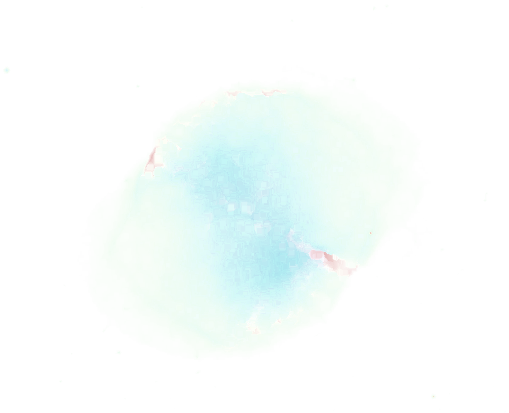

再度[infomation/credit]を押せば閉じられます。You can close this popup by clicking [infomation/credit] again.
このページは，天体の眼視観望を疑似体験するために使用するページです。
スマートフォンなどに表示し，それを適当なレンズで覗きます。レンズ構成については現在考え中です。
ひとみ径，アイポイント，見掛け視野，収差などを考慮し，まるで本当に望遠鏡で見ているような覗き心地を目指しています。みなさんもぜひいろいろと試してみてください。
This page is used to create a simulated experience of visual stargazing .
First, the user displays this page on a device such as a smartphone. Secondly, they watch the display through a suitable lens. Regarding the lens configuration, I am considering that.
Considering exit pupil diameter, eye point, apparent field of view, distortion, etc. , I'm aiming for the user to feel as if they are really watching a DSO through a telescope.
Please try out various options.
正確性よりも(私個人が思う)美しさや感動を重視しています。よって実際の見えかたとは異なる場合があります。
I put more priority on beauty and impression than correctness, so It can diffrent from reality.
使用する天体写真について，現在ちょうどよいものがなく困っています。(自分の固定撮影作品では品質が低すぎるため。スカイサーベイも，天体が白飛びしていたり可視光ではなかったり...)
そこで，もしよろしければ天体写真を提供していただきたいです。fits,tiff,pngなどの形式で，できればダーク・フラット・スタックなどの前処理のみ済ませた生データが好ましいです。
星は白飛びしていても問題なく，星雲や銀河の高輝度部分が白飛びしていないことを望んでいます。基本的にどんな天体でも構いません。提供していただければ優先的に実装するつもりです。
画像の提供も含め質問・要望・報告・助言などはtwitter@legrs4073 もしくは ktgwyi01@gmail.com までご連絡ください。
Regarding the astrophotography used on this page, I'm having trouble finding suitable photos. This is because the quality of my fixed imaging astrophotography is poor. Also, almost all sky surveys are oversaturated or do not show the visual light spectrum.
Could you therefore contribute your photographs to me? The data type could be FITS, TIFF or PNG. I would prefer them to be pre-processed (dark frame subtraction, flat field correction and stacking).
I hope for no saturation in nebulae or galaxies, but star saturation is not a problem. Any DSO is fine. I would implement the DSOs in the order that you provide them.
If you are considering providing your photos to me, or if you have any questions, requests, reports or advice, please contact me via twitter (@legrs4073) or email (ktgwyi01@gmail.com).
stars : Gaia DR3
m27 nebula images : Middlebury College , Jonathan Kemp URL LICENCE:CC_BY_4.0
m104 nebula images : だいこもん (twitter @pochomskii)URL